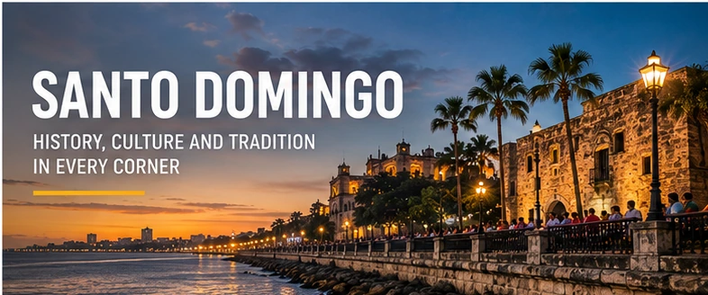

Welcome to Santo Domingo Cultural Hub
Discover the vibrant cultural experiences of Santo Domingo. Explore events, attractions, and community activities that highlight the city’s identity.

Discover the vibrant cultural experiences of Santo Domingo. Explore events, attractions, and community activities that highlight the city’s identity.
